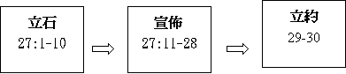

|
持
得
豐
盛
之
關
鍵 |
|||||
|
勇敢踏上 |
謹守遵行 |
選擇上好 |
追念失敗 |
得蒙賜福 |
效法神僕 |
|
１－３ |
４－２６ |
２７－３０ |
３１－３２ |
３３ |
３４ |
三.選擇上好的福份(27-30)
〜特點：很多「若」「倘若」「必」「陳明」「咒詛」「福」「禍」字
〜內容：摩西將福禍生死陳明給百姓，百姓可以選擇，若選不守神話，必遭禍患，若順服，必蒙福
〜結構：

1.立石刻法(27:1-10)
A.第一要緊的事
「你們過約但河，到了耶和華你神所賜給你的地，當天要立起幾塊大石頭，墁上石灰，把這律法的一切話寫在石頭上。你過了河，可以進入耶和華你神所賜你流奶與蜜之地，正如耶和華你列祖之神所應許你的。」27:2-3
〜入到迦南地，第一要緊的是立石刻法，將神的話寫在石上．
B.甘心樂意的事
「要用沒有鑿過的石頭築耶和華你神的壇，在壇上要將燔祭獻給耶和華你的神。又要獻平安祭，且在那裡吃，在耶和華你的神面前歡樂。」27:6-7
〜要築壇，代表來到神面前，將燔祭獻給神，在舊約，來到神前，通常要獻燔祭，代表贖罪，先求潔淨，也代表不空手朝見神．
〜另外，要獻平安祭，平安祭有「甘心」「歡樂」「感恩」味道，人在神面前立石刻法，表明對神的話重視，及願一生遵守，是歡喜甘心樂意的事．
C.一生不忘的事
「你要將這律法的一切話明明的寫在石頭上。」27:8
〜寫在石頭上，不易磨滅，要自己，後代一生記得神的律法．
D.理所當然的事
「摩西和祭司利未人曉諭以色列眾人說：「以色列啊，要默默靜聽。你今日成為耶和華你神的百姓了。所以要聽從耶和華你神的話，遵行他的誡命律例，就是我今日所吩咐你的。」27:9-10
〜神既然是選民的神，選民是神的百姓，也理所當然重視祂的話，並遵守祂的律例典章．
2.宣佈福禍(27:11-28:68)
A.宣佈的方式
「當日，摩西囑咐百姓說：「你們過了約但河，西緬、利未、猶大、以薩迦、約瑟、便雅憫六個支派的人都要站在基利心山上為百姓祝福。流便、迦得、亞設、西布倫、但、拿弗他利六個支派的人都要站在以巴路山上宣布咒詛。」27:11-13
〜是一半支派在基利心山上宣佈祝福的話，一半支派在以巴路山宣布咒詛．
B.咒詛的宣佈
a.特出敬神的先要
「有人製造耶和華所憎惡的偶像，或雕刻，或鑄造，就是工匠手所做的，在暗中設立，那人必受咒詛！』百姓都要答應說：『阿們！』」27:15
〜先題不可立偶像，要先尊重神
b.包含十誡的精意
(1)與考敬父母有關
「『輕慢父母的，必受咒詛！』百姓都要說：『阿們！』」27:16
(2)與不可貪心有關
「『挪移鄰舍地界的，必受咒詛！』百姓都要說：『阿們！』」27:17
(3)與愛人如己有關
「『使瞎子走差路的，必受咒詛！』百姓都要說：『阿們！』『向寄居的和孤兒寡婦屈枉正直的，必受咒詛！』百姓都要說：『阿們！』」27:18-19
(4)與不可姦淫有關
「『與繼母行淫的，必受咒詛！因為掀開他父親的衣襟。』百姓都要說：『阿們！』『與獸淫合的，必受咒詛！』百姓都要說：『阿們！』『與異母同父，或異父同母的姊妹行淫的，必受咒詛！』百姓都要說：『阿們！』『與岳母行淫的，必受咒詛！』百姓都要說：『阿們！』」27:20-23
(5)與不可殺人有關
「『暗中殺人的，必受咒詛！』百姓都要說：『阿們！』」27:24
(6)與不可作假見証有關
「『受賄賂害死無辜之人的，必受咒詛！』百姓都要說：『阿們！』」27:25
c.咒詛臨到的必然
「『不堅守遵行這律法言語的，必受咒詛！』百姓都要說：『阿們！』」27:26
〜很多「必受咒詛」字眼，一定發生的
d.表示甘心的認同
〜每一次講完咒詛後，「百姓都要說，阿門」表示真心認同違者的惡果，是肯定的，是應該的．
C.恩福的表明(28:1-14)
〜若行神的話，有甚麼福氣？
a.由遠至近的福氣
「你若聽從耶和華你神的話，這以下的福必追隨你，臨到你身上：你在城裡必蒙福，在田間也必蒙福。你身所生的，地所產的，牲畜所下的，以及牛犢、羊羔，都必蒙福。你的筐子和你的摶麵盆都必蒙福。你出也蒙福，入也蒙福。」28:2-6
〜由「城裏」→「田間」→「所生」→自己「出入」遠至近也都蒙福．
b.超卓成就的福氣
「你若留意聽從耶和華你神的話，謹守遵行他的一切誡命，就是我今日所吩咐你的，他必使你超乎天下萬民之上。」28:1
(1)爭戰上的成就
「仇敵起來攻擊你，耶和華必使他們在你面前被你殺敗；他們從一條路來攻擊你，必從七條路逃跑。」28:7
(2)工作上的成就
「在你倉房裡，並你手所辦的一切事上，耶和華所命的福必臨到你。耶和華你神也要在所給你的地上賜福與你。」28:8
(3)國勢上的成就
「你若謹守耶和華你神的誡命，遵行他的道，他必照著向你所起的誓立你作為自己的聖民。天下萬民見你歸在耶和華的名下，就要懼怕你。」28:9-10
「你若聽從耶和華你神的誡命，就是我今日所吩咐你的，謹守遵行，不偏左右，也不隨從事奉別神，耶和華就必使你作首不作尾，但居上不居下。」28:13-14
D.相反的惡果(28:15-57)
〜回應之前的福氣，選民若不聽從，必有以下相反的惡果
a.由遠至近的禍患
「你在城裡必受咒詛，在田間也必受咒詛。你的筐子和你的摶麵盆都必受咒詛。你身所生的，地所產的，以及牛犢、羊羔，都必受咒詛。你出也受咒詛，入也受咒詛。」28:16-19
〜同樣由「城裏」「田間」→「所生」→自己「出入」，不過今次不是福氣，而是相反咒詛．
b.何等羞辱的奇災
〜之前題及成就，但若違背神旳話，必有以下相反的羞辱及災禍
(1)工作上的咒詛
「耶和華因你行惡離棄他，必在你手裡所辦的一切事上，使咒詛、擾亂、責罰臨到你，直到你被毀滅，速速地滅亡。」28:20
(2)自然上的咒詛
「耶和華必使瘟疫貼在你身上，直到他將你從所進去得為業的地上滅絕。耶和華要用癆病、熱病、火症、瘧疾、刀劍、旱風（或作：乾旱）、霉爛攻擊你。這都要追趕你，直到你滅亡。你頭上的天要變為銅，腳下的地要變為鐵。」28:21-23
〜天變為銅，地變為鐵，代表旱災，天下降雨水，地因沒水而變硬如鐵．
(3)爭戰上的咒詛
(A)戰敗
「耶和華必使你敗在仇敵面前，你從一條路去攻擊他們，必從七條路逃跑。你必在天下萬國中拋來拋去。」28:25
(B)被殺
「你的屍首必給空中的飛鳥和地上的走獸作食物，並無人鬨趕。」28:26
(C)得病
「耶和華必用埃及人的瘡並痔瘡、牛皮癬與疥攻擊你，使你不能醫治。」28:27
〜「埃及人的蒼」可能指神懲罰埃及時的病/皮膚病
(D)被掠
「你必在午間摸索，好像瞎子在暗中摸索一樣。你所行的必不亨通，時常遭遇欺壓、搶奪，無人搭救。你聘定了妻，別人必與他同房；你建造房屋，不得住在其內；你栽種葡萄園，也不得用其中的果子。你的牛在你眼前宰了，你必不得吃他的肉；你的驢在你眼前被搶奪，不得歸還；你的羊歸了仇敵，無人搭救。你的兒女必歸與別國的民；你的眼目終日切望，甚至失明，你手中無力拯救。」28:29-32
(4)國勢上的咒詛
(A)滅亡被擄
「耶和華必將你和你所立的王領到你和你列祖素不認識的國去；在那裡你必事奉木頭石頭的神。」28:36
(B)受羞被誚
「你在耶和華領你到的各國中，要令人驚駭、笑談、譏誚。」28:37
(C)貧窮可憐
「你帶到田間的種子雖多，收進來的卻少，因為被蝗蟲吃了。你栽種、修理葡萄園，卻不得收葡萄，也不得喝葡萄酒，因為被蟲子吃了。」28:38-39
(D)漸漸降卑
「在你中間寄居的，必漸漸上升，比你高而又高；你必漸漸下降，低而又低。他必借給你，你卻不能借給他；他必作首，你必作尾。」28:43-44
c.相對而得的報應
「因為你富有的時候，不歡心樂意地事奉耶和華你的神，所以你必在飢餓、乾渴、赤露、缺乏之中事奉耶和華所打發來攻擊你的仇敵。他必把鐵軛加在你的頸項上，直到將你滅絕。」28:47-48
〜選民在富有時，不歡心樂意事奉神，所以有相得的報應，將來必在缺乏羞辱中事奉仇敵．
(1)飢餓乾渴中服事仇敵
「耶和華要從遠方、地極帶一國的民，如鷹飛來攻擊你。這民的言語，你不懂得。」28:49
「他們必吃你牲畜所下的和你地土所產的，直到你滅亡。你的五穀、新酒，和油，以及牛犢、羊羔，都不給你留下，直到將你滅絕。」28:51
「仇敵必如大鷹飛起，展開翅膀攻擊波斯拉。到那日，以東的勇士心中疼痛如臨產的婦人。」」耶49:22
「所以，耶和華使迦勒底人的王來攻擊他們，在他們聖殿裡用刀殺了他們的壯丁，不憐恤他們的少男處女、老人白叟。耶和華將他們都交在迦勒底王手裡。」代下36:17
「遠方地極帶一國的民，如鷹．．．．」指巴比倫，事實上，真是應驗，巴比倫進入耶路撒冷，不憐恤老少，並將選民擄去．
(2)赤露缺乏中事奉敵人
「你們中間，柔弱嬌嫩的婦人，是因嬌嫩柔弱不肯把腳踏地的，必惡眼看他懷中的丈夫和他的兒女。他兩腿中間出來的嬰孩與他所要生的兒女，他因缺乏一切就要在你受仇敵圍困窘迫的城中將他們暗暗的吃了。」28:56-57
「耶和華啊，求你觀看！見你向誰這樣行？婦人豈可吃自己所生育手裡所搖弄的嬰孩嗎？祭司和先知豈可在主的聖所中被殺戮嗎？耶和華啊，求你觀看！見你向誰這樣行？婦人豈可吃自己所生育手裡所搖弄的嬰孩嗎？祭司和先知豈可在主的聖所中被殺戮嗎？」哀2:20
E.預告的目的(28:58-68)
a.目的
「這書上所寫律法的一切話是叫你敬畏耶和華你神可榮可畏的名。你若不謹守遵行，耶和華就必將奇災，就是至大至長的災，至重至久的病，加在你和你後裔的身上。」28:58-59
〜目的是要他們敬畏神，原來得罪神是這麼嚴重的
b.預告
「又必將沒有寫在這律法書上的各樣疾病、災殃降在你身上，直到你滅亡。你們先前雖然像天上的星那樣多，卻因不聽從耶和華你神的話，所剩的人數就稀少了。」28:61-62
3.同心立約(29-30)
「這是耶和華在摩押地吩咐摩西與以色列人立約的話，是在他和他們於何烈山所立的約之外。」29:1
〜不是廢掉西乃之約，只是重申此約，並同今日仍在的選民在摩押地立約．
A.立約的真神（29:1-9）
〜這約是與神立的，選民必需認識祂是誰，才與祂立約．
a.行奇事的神
「摩西召了以色列眾人來，對他們說：「耶和華在埃及地，在你們眼前向法老和他眾臣僕，並他全地所行的一切事，你們都看見了，就是你親眼看見的大試驗和神蹟，並那些大奇事。」29:2-3
〜有舊一批選民（仍未死在曠野）曾見過神在埃行地行大奇事，只要百姓勇敢踏上行神旨意，有行奇事的神同在及保護，還有甚麼懼怕呢？
b.難看見的神
「但耶和華到今日沒有使你們心能明白，眼能看見，耳能聽見。」29:4
「隱秘的事是屬耶和華我們神的；惟有明顯的事是永遠屬我們和我們子孫的，好叫我們遵行這律法上的一切話。」29:29
〜但選民仍未見到神的真貌，也聽不到祂聲音，只能透過摩西傳達神的律法，神不給他們明白與看見，是叫他們不因看見而製造任何神的形像及偶像．
c.以色列的神
「我領你們在曠野四十年，你們身上的衣服並沒有穿破，腳上的鞋也沒有穿壞。你們沒有吃餅，也沒有喝清酒濃酒。這要使你們知道，耶和華是你們的神。」29:5-6
〜選民實在經歷過神過往特別的看顧，証明神真是以色列的神，作為屬祂子民，遵守祂的話，而若行，神必使他們如過往一樣蒙神保守，賜福．
B.立約的群體(29:10-11)
「今日，你們的首領、族長（原文作支派）、長老、官長、以色列的男丁，你們的妻子兒女，和營中寄居的，以及為你們劈柴挑水的人，都站在耶和華你們的神面前，」29:10-11
「凡與我們一同站在耶和華我們神面前的，並今日不在我們這裡的人，我也與他們立這約，起這誓。」29:15
〜與首領，選民，寄居的及奴婢立約
C.立約的原因(29:12-29)
a.關係的持續→順服神話
「為要你順從耶和華你神今日與你所立的約，向你所起的誓。這樣，他要照他向你所應許的話，又向你列祖亞伯拉罕、以撒、雅各所起的誓，今日立你作他的子民，他作你的神。」29:12-13
〜神人關係的持久與和諧，在乎人守不守神的話，若順服，神必作他們的神，他們必作神的子民，所以立約的目的，是要更鞏固神人關係．
b.鬆懈的惟恐→預先警告
(1)恐怕百姓心裏快偏離真神
(2)恐怕百姓以為神不會發怒
「聽見這咒詛的話，心裡仍是自誇說：『我雖然行事心裡頑梗，連累眾人，卻還是平安。』」29:19
*神必發怒的警告
「所以耶和華的怒氣向這地發作，將這書上所寫的一切咒詛都降在這地上。」29:27
「隱秘的事是屬耶和華我們神的；惟有明顯的事是永遠屬我們和我們子孫的，好叫我們遵行這律法上的一切話。」29:29
〜「隱祕的事」指難見神的真貌，但此約所表明的律法卻明顯易見，立約的目不單是要他們在神面前儆醒，決心不鬆懈，也要他們日後子孫謹記．
D.附註的內容(30:1-14)
a.選民若失敗了，怎算？
(1)仍可回轉
「我所陳明在你面前的這一切咒詛都臨到你身上；你在耶和華你神追趕你到的萬國中必心裡追念祝福的話；你和你的子孫若盡心盡性歸向耶和華你的神，照著我今日一切所吩咐的聽從他的話；」30:1-2
(2)神必憐恤
(A)得歸回
「那時，耶和華你的神必憐恤你，救回你這被擄的子民；耶和華你的神要回轉過來，從分散你到的萬民中將你招聚回來。你被趕散的人，就是在天涯的，耶和華你的神也必從那裡將你招聚回來。
(B)得地土
「耶和華你的神必領你進入你列祖所得的地，使你可以得著；又必善待你，使你的人數比你列祖
眾多。」30:5
(C)得赦免
「耶和華你神必將你心裡和你後裔心裡的污穢除掉，好叫你盡心盡性愛耶和華你的神，使你可以存活。」30:6
(D)得福氣
「你若聽從耶和華你神的話，謹守這律法書上所寫的誡命律例，又盡心盡性歸向耶和華你的神，他必使你手裡所辦的一切事，並你身所生的，牲畜所下的，地土所產的都綽綽有餘；因為耶和華必再喜悅你，降福與你，像從前喜悅你列祖一樣。」30:9-10
b.選民若覺難守，怎辦？
(1)神的話不是難遵守
「我今日所吩咐你的誡命不是你難行的，也不是離你遠的；」30:11
(2)神的話不是難捉摸
「這話卻離你甚近，就在你口中，在你心裡，使你可以遵行。」30:14
「他到底怎麼說呢？他說：這道離你不遠，正在你口裡，在你心裡。（就是我們所傳信主的道。）」羅10:8
〜選民由小開始，已背誦神的話，神的話也會由祭司，利末人傳講，也不是難明，良心也會提醒我們，到新約，主的話也藉門徒傳開，人有聖靈在心，也不難記起明白神的話，也靠主可以行出來．
E.神僕的心懷(30:15-20)
a.呼天喚地的陳明福禍生死
「看哪，我今日將生與福，死與禍，陳明在你面前。」30:15
「我今日呼天喚地向你作見證；我將生死禍福陳明在你面前，所以你要揀選生命，使你和你的後裔都得存活；」30:19
〜選民是聽見的，也知甚麼是禍，其麼是福，應有智慧選擇上好福．
b.逼切肯定的表明謹守重要
「倘若你心裡偏離，不肯聽從，卻被勾引去敬拜事奉別神，我今日明明告訴你們，你們必要滅亡；在你過約但河、進去得為業的地上，你的日子必不長久。」30:17-18
「且愛耶和華你的神，聽從他的話，專靠他；因為他是你的生命，你的日子長久也在乎他。這樣，你就可以在耶和華向你列祖亞伯拉罕、以撒、雅各起誓應許所賜的地上居住。」30:20
〜摩西肯定明明告訴選民，若不守神話，「必」滅亡，若守，必能有生命，得長久．